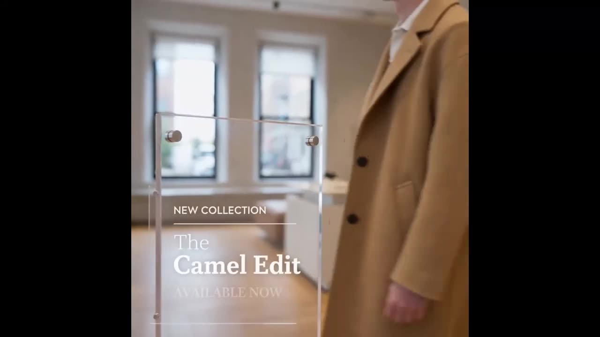
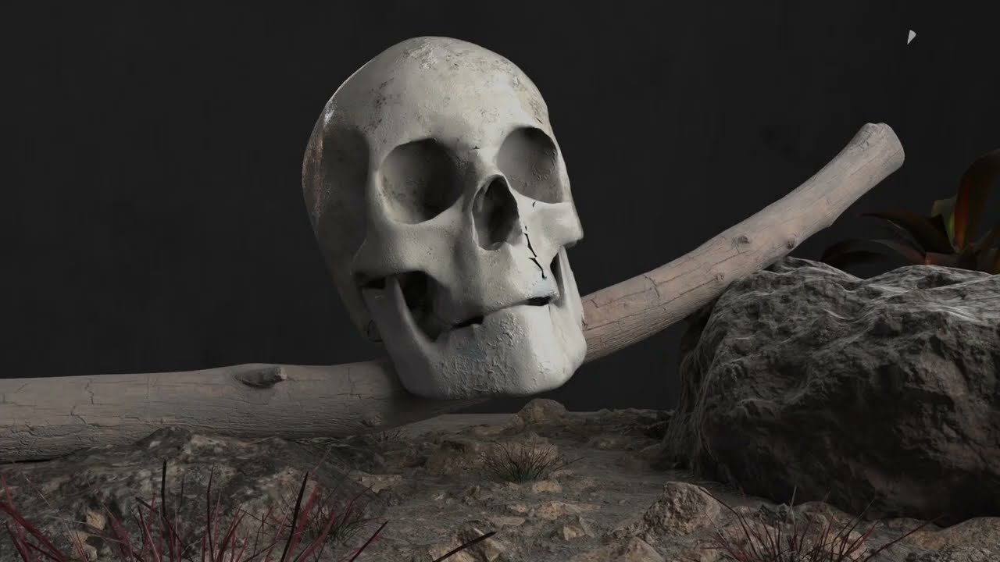
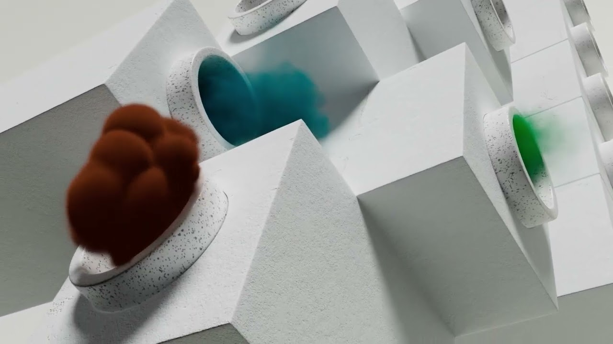
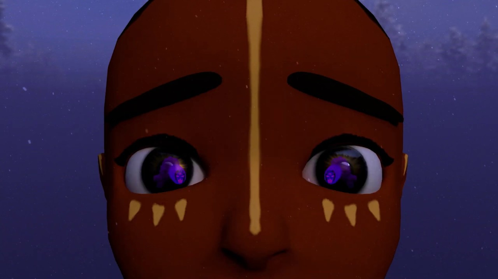
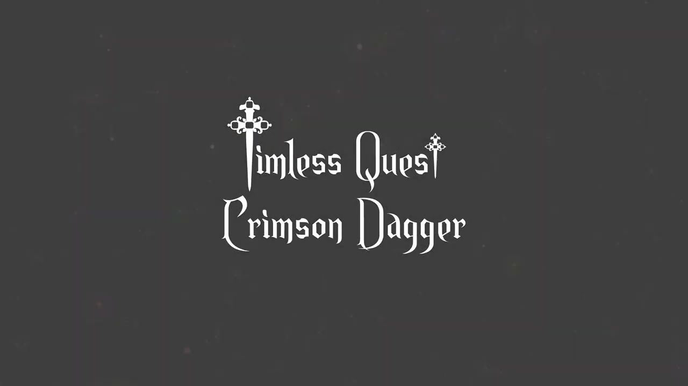
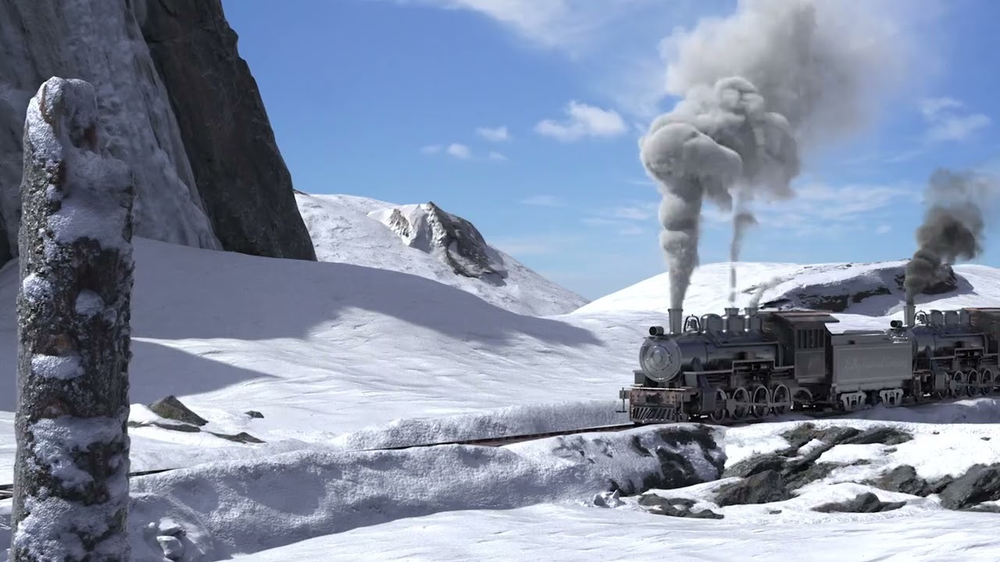
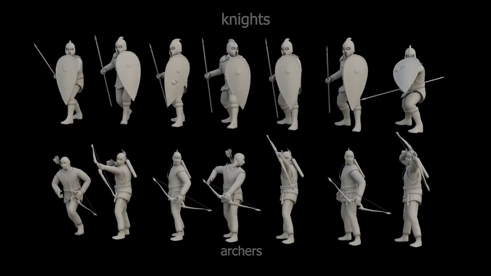
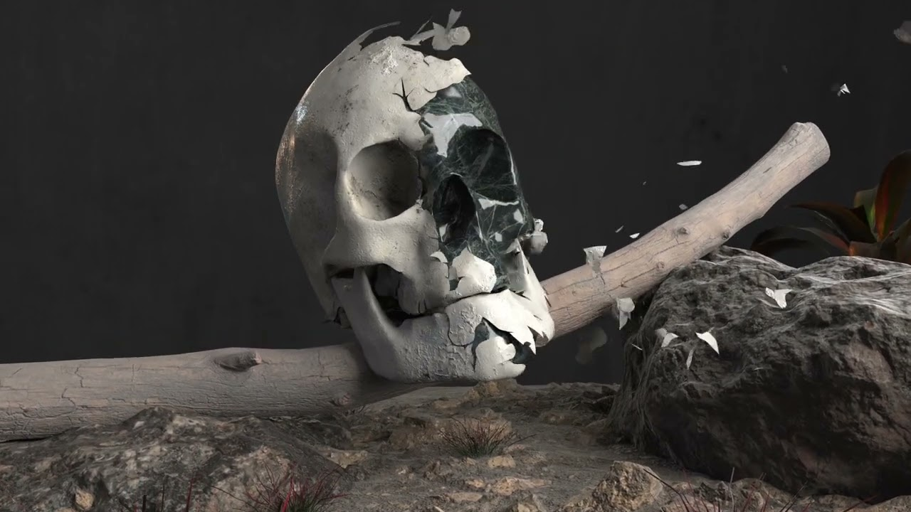
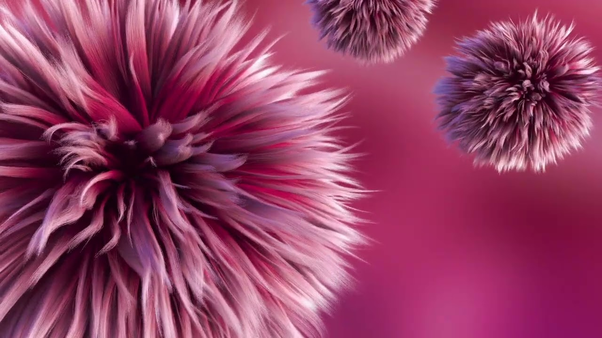
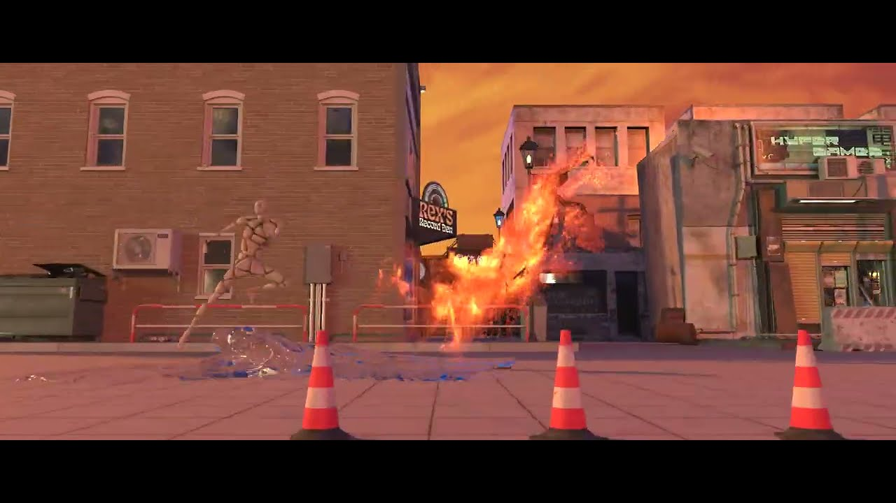

← Portfolio Spec films, FX studies, school work
Personal & spec
Work made on my own initiative: spec product films with fictional brands, Houdini FX studies, and the projects from my master’s in Barcelona and my licence at ESAD Tunis.
This portfolio brings together spec product films, Houdini FX studies and selected school projects made outside a single commissioned brief. The collection includes an ESAD final showreel from 2020, yearly demoreels for 2021/22, 2022/23 and 2023/24, and Timeless Quest as a master’s final project. Alaa completed a Master in VFX at FX Animation Barcelona from 2021 to 2024. These pieces show different kinds of practice, from personal visual studies to academic work and fictional-brand films. The yearly reels offer a view across successive periods of practice, while Timeless Quest represents a final academic project. The reels and school projects span documented work from the 2020 showreel through the 2023/24 demoreel. For a new commission, choose a relevant example and explain the visual problem it explores.











Frequently asked questions
Which work here is speculative?
The collection includes product films made with fictional brands, personal visual studies and school work. It also features yearly demoreels and Timeless Quest, a master’s final project. Spec pieces are self-initiated concepts, distinct from commissioned work, and the fictional brand context can be identified alongside each project.
Which education projects are represented?
The portfolio includes an ESAD final showreel from 2020 and Timeless Quest as a master’s final project. Alaa completed a Master in VFX at FX Animation Barcelona from 2021 through 2024. These education-related works sit alongside personal visual studies and speculative films.
How should a spec piece be described to a client?
Label the work as speculative, identify any fictional brand and explain the visual question the piece explores. This lets a client understand the intended direction without mistaking a concept for a commissioned campaign or a real business result. A clear label gives the work context while keeping its creative idea easy to evaluate.